Vezzano sul CrostoloReggio Emilia
Il tessuto,tagliato al millimetro.
Taglio tessuti e modellistica dagli anni ’50: controllo, adesivazione, CAD-CAM, taglio automatico e confezione campioni.
Scorrete per tagliare
Chi siamo
L’esperienza dell’artigianato italiano, unita alla ricerca e alle macchine più moderne. Generazioni di lavoro sartoriale e un aggiornamento continuo, per un tagliato preciso e capi che escono come devono.
Servizi
Cinque lavorazioni,
un solo stabilimento.
Dalla pezza appena arrivata al campione cucito: controlliamo, adesiviamo, sviluppiamo il modello, tagliamo e confezioniamo a Vezzano sul Crostolo, senza viaggi fra un fornitore e l’altro.
Controllo tessuti
Ogni pezza verificata alla specula, misurata senza tensione e segnalata fallo per fallo. Scopri SpeculaSpettrofotometroProva vaporeAdesivazione
Adesivazione, accoppiatura e decatizzo con la strumentazione nuova del reparto. Scopri AdesivazioneAccoppiaturaDecatizzoModellistica CAD-CAM
Sviluppo taglie, digitalizzazione dei cartamodelli e piazzamento automatico. Scopri Sviluppo taglieIntelli-diPiazzamentoTaglio computerizzato
Dai tessuti leggeri agli spalmati, fino a 7 cm di materasso, anche con l’intelligenza artificiale. Scopri Intelligenza artificialeFino a 7 cmConveyorConfezione campioni
Capi campionario e di produzione, cuciti da operatrici con esperienza decennale. Scopri CampionarioProduzioneIn casaIl parco macchine
Macchine sempre aggiornate,
mani che sanno cosa fanno.
7cm
di materasso tagliato in automatico dall’Investronica Diamond
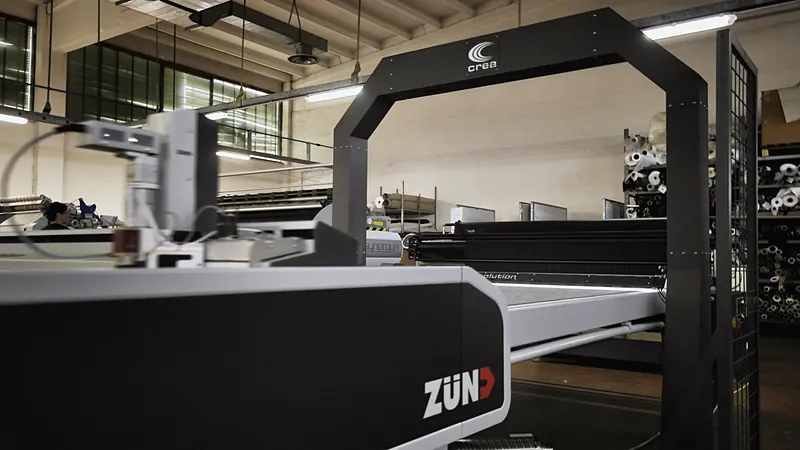
200cm
di altezza utile del plotter Algotex Stream 180
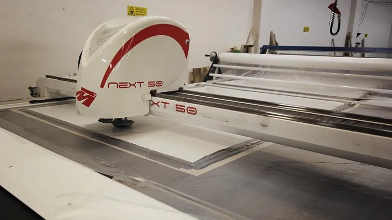
1m
di diametro dei rotoli al banco di controllo
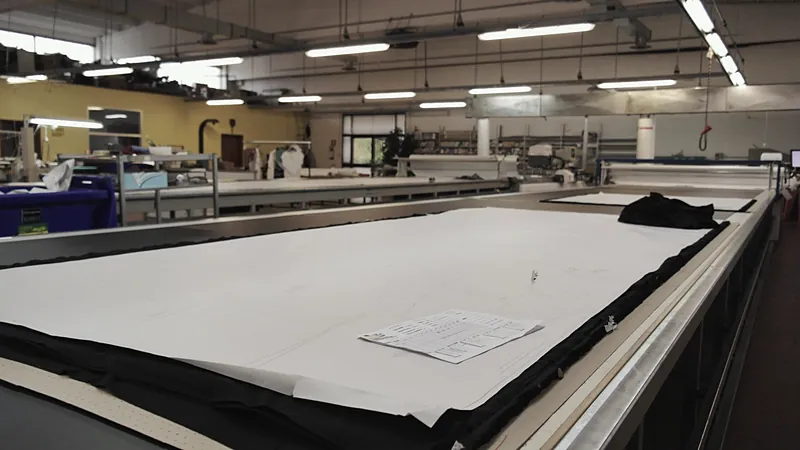
20s
al massimo di prova vapore, col metodo Hoffman
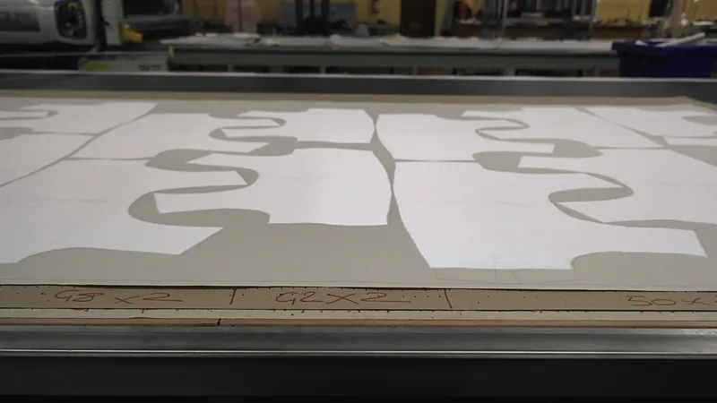
Dentro il laboratorio
Le foto sono del nostro reparto. Scorrete, passate sopra o trascinate.
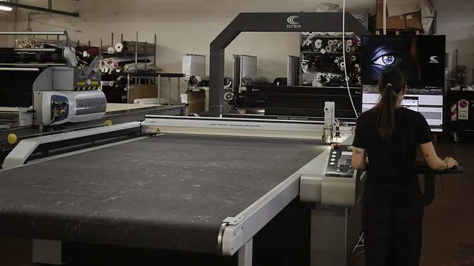
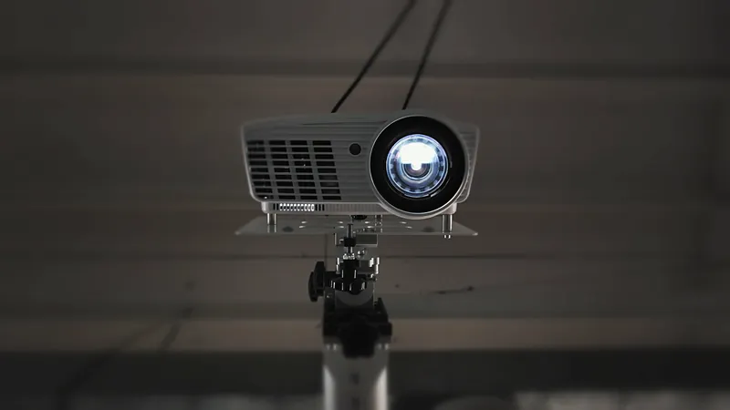
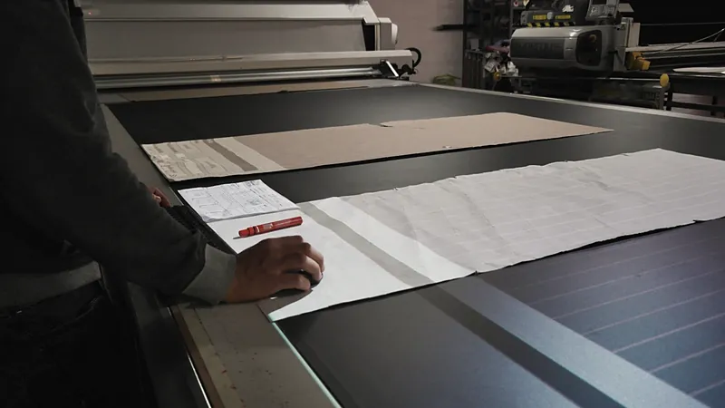
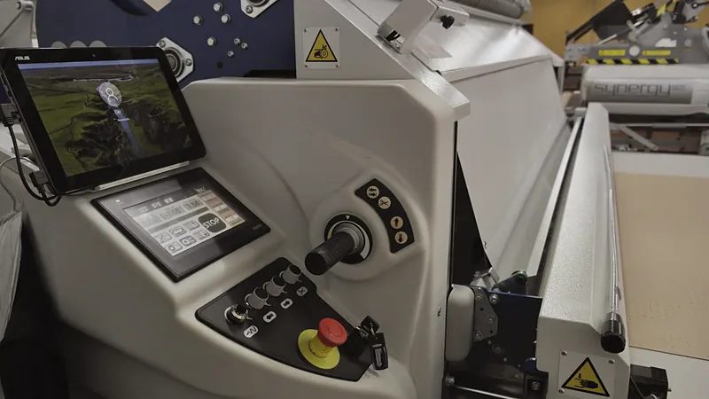
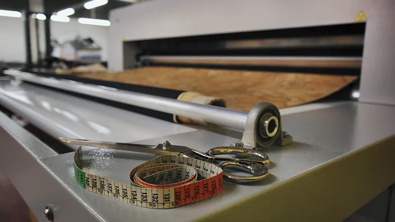
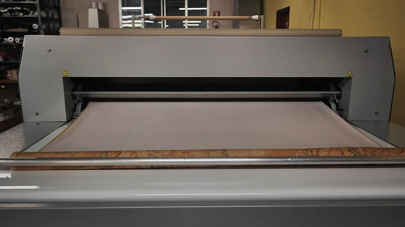
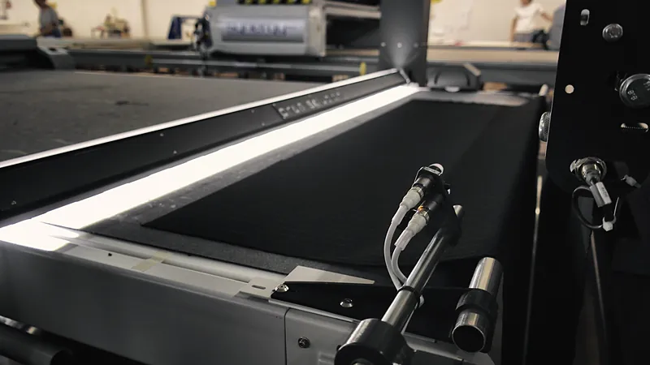
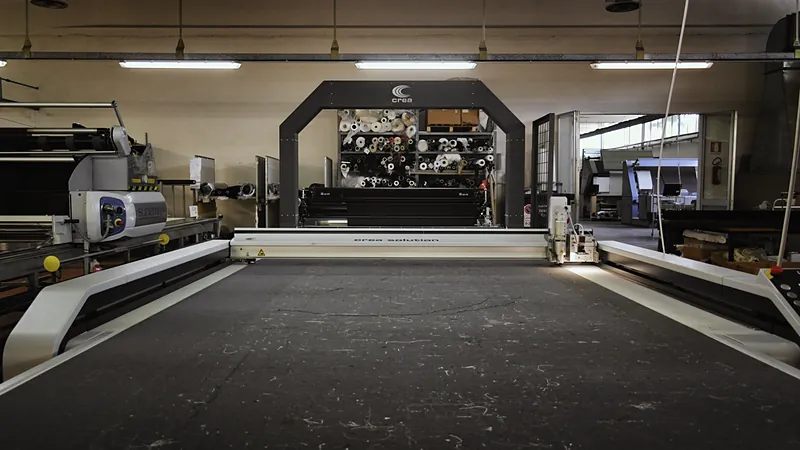
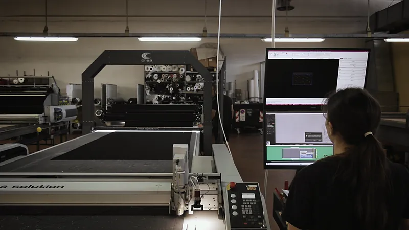
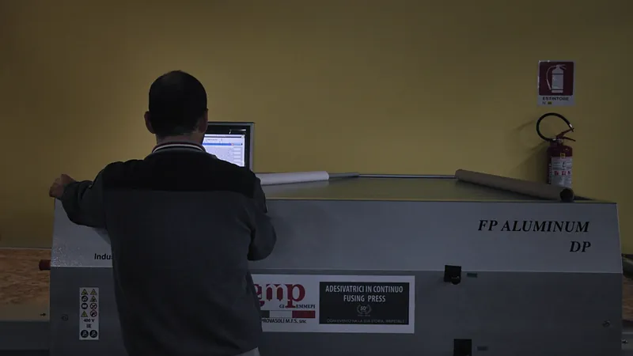
Per chi tagliamo
- Moda e lusso Allover, stampa digitale, loghi e motivi ripetuti, tagliati con l’intelligenza artificiale.
- Automotive Materiali tecnici e spalmati, fino a 7 cm di materasso.
- Arredamento Tessuti per imbottiti e tendaggi, stesi senza tensioni.
-
Modellistica
Sviluppo taglie, digitalizzazione e piazzamenti da qualsiasi CAD-CAM.
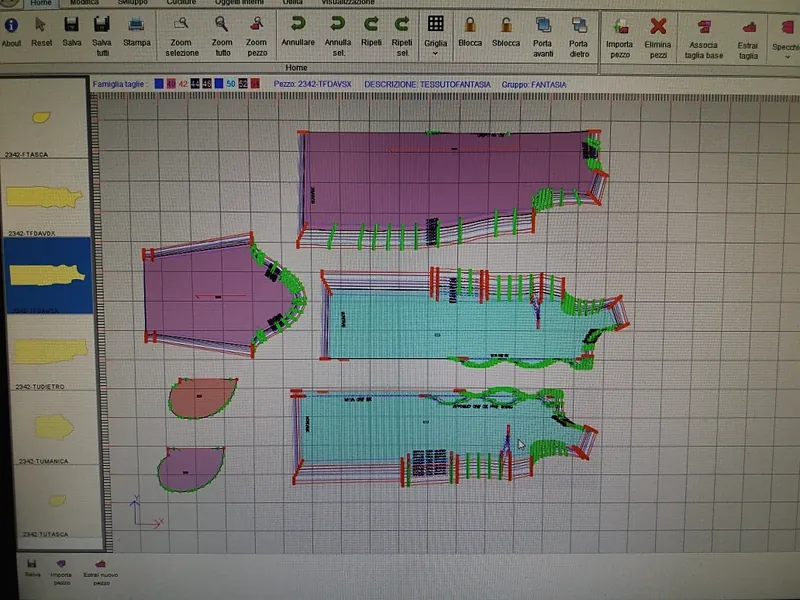
-
Sanitario
Mascherine, tute e camici in poliestere idrorepellente.
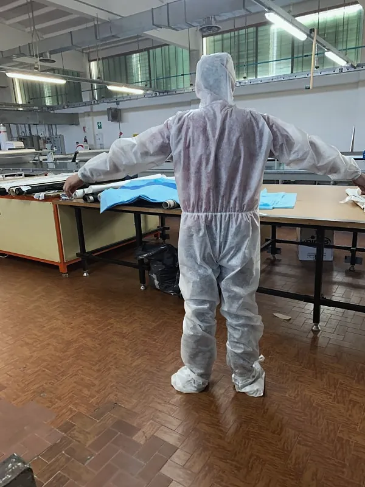